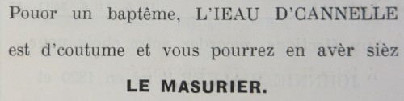

Dé l'Ieau d'Cannelle

L's îngrédgiens :
- 1 livre d'chucre (du blianc), ou pus ou mains s'nou veurt
- 1 quarte dg'ieau bouoillante
- 1 quarte d'blianche ieau-d'vie
- d'la cannelle en chouque
L'èrchette :
Fondre l'chucre auve l'ieau bouoillante, pis ajouôter la cannelle et l'ieau-d'vie.
Nota: Nou-s-offrait dé l'ieau d'cannelle à un bâptême, et ès cheins tchi v'naient en visite auprès. Eune ancienne santé bue à l'occasion d'un bâptême dans d'l'ieau d'cannelle était : A la santé d'la méthe, et d'l'angneau - tchi chuche la moelle sans câsser l's os !
Viyiz étout: